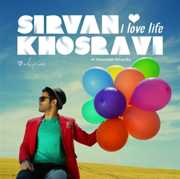
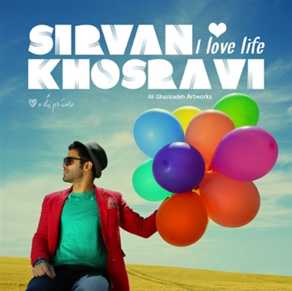

ѕιяναη кнσѕяανι
 


𝐊𝐡𝐨𝐬𝐫𝐚𝐯𝐢 𝐬𝐭𝐚𝐫𝐭𝐞𝐝 𝐭𝐨 𝐩𝐫𝐨𝐝𝐮𝐜𝐞 𝐡𝐢𝐬 𝐬𝐞𝐜𝐨𝐧𝐝 𝐦𝐮𝐬𝐢𝐜 𝐚𝐥𝐛𝐮𝐦 "𝐒𝐚’𝐚𝐭𝐞 𝟗"
𝐫𝐨𝐦 𝟐𝟎𝟎𝟓 𝐚𝐧𝐝 𝐫𝐞𝐥𝐞𝐚𝐬𝐞𝐝 𝐢𝐭 𝐢𝐧 𝟐𝟎𝟎𝟗. 𝐇𝐞 𝐩𝐞𝐫𝐟𝐨𝐫𝐦𝐞𝐝 𝐡𝐢𝐬 𝐟𝐢𝐫𝐬𝐭 𝐜𝐨𝐧𝐜𝐞𝐫𝐭
𝐢𝐧 𝐅𝐞𝐛𝐫𝐮𝐚𝐫𝐲 𝟐𝟎𝟎𝟗. 𝐈𝐧 𝟐𝟎𝟏𝟐, 𝐡𝐞 𝐛𝐞𝐜𝐚𝐦𝐞 𝐯𝐞𝐫𝐲 𝐩𝐨𝐩𝐮𝐥𝐚𝐫 𝐚𝐦𝐨𝐧𝐠 𝐈𝐫𝐚𝐧𝐢𝐚𝐧𝐬
𝐛𝐲 𝐩𝐞𝐫𝐟𝐨𝐫𝐦𝐢𝐧𝐠 𝐭𝐡𝐞 𝐞𝐧𝐝 𝐬𝐨𝐧𝐠 𝐨𝐟 "𝐒𝐚𝐤𝐡𝐭𝐞𝐦𝐚𝐧 𝐏𝐞𝐳𝐞𝐬𝐡𝐤𝐚𝐧" 𝐨𝐫 "𝐃𝐨𝐜𝐭𝐨𝐫𝐬' 𝐁𝐮𝐢𝐥𝐝𝐢𝐧𝐠" 𝐬𝐡𝐨𝐰.
𝐀𝐟𝐭𝐞𝐫 𝐠𝐚𝐢𝐧𝐢𝐧𝐠 𝐬𝐮𝐜𝐜𝐞𝐬𝐬 𝐰𝐢𝐭𝐡 𝐡𝐢𝐬 𝐚𝐥𝐛𝐮𝐦
𝐒𝐚'𝐚𝐭𝐞 𝟗 𝐰𝐢𝐭𝐡 𝐡𝐢𝐭𝐬 𝐬𝐮𝐜𝐡 𝐚𝐬 "𝐄𝐦𝐫𝐨𝐨𝐳 𝐌𝐢𝐤𝐡𝐚𝐦
𝐁𝐞𝐡𝐞𝐭 𝐁𝐞𝐠𝐚𝐦" (𝐭𝐨𝐝𝐚𝐲, 𝐈 𝐰𝐚𝐧𝐭 𝐭𝐨 𝐭𝐞𝐥𝐥 𝐲𝐨𝐮),
"𝐙𝐞𝐧𝐝𝐞𝐠𝐢 𝐇𝐚𝐦𝐢𝐧 𝐄𝐦𝐫𝐨𝐨𝐳𝐞" (𝐋𝐢𝐟𝐞 𝐢𝐬 𝐣𝐮𝐬𝐭 𝐭𝐨𝐝𝐚𝐲),
"𝐃𝐞𝐥𝐚𝐦 𝐆𝐞𝐫𝐞𝐟𝐭𝐞" (𝐈'𝐦 𝐅𝐞𝐞𝐥𝐢𝐧𝐠 𝐁𝐥𝐮𝐞), 𝐡𝐞 𝐬𝐭𝐚𝐫𝐭𝐞𝐝
𝐭𝐨 𝐰𝐨𝐫𝐤 𝐨𝐧 𝐡𝐢𝐬 𝐧𝐞𝐱𝐭 𝐚𝐥𝐛𝐮𝐦 𝐉𝐚𝐝𝐝𝐞𝐢𝐞 𝐑𝐨𝐲𝐚𝐡𝐚 (𝐑𝐨𝐚𝐝 𝐨𝐟 𝐃𝐫𝐞𝐚𝐦𝐬)
𝐰𝐡𝐢𝐜𝐡 𝐰𝐚𝐬 𝐚𝐠𝐚𝐢𝐧 𝐚 𝐬𝐮𝐜𝐜𝐞𝐬𝐬. 𝐁𝐮𝐭 𝐚𝐟𝐭𝐞𝐫 𝐫𝐞𝐥𝐞𝐚𝐬𝐢𝐧𝐠 𝐬𝐨𝐦𝐞
"𝐡𝐢𝐠𝐡𝐥𝐲 𝐞𝐧𝐞𝐫𝐠𝐞𝐭𝐢𝐜" 𝐬𝐢𝐧𝐠𝐥𝐞𝐬 𝐡𝐞 𝐫𝐨𝐬𝐞 𝐭𝐨 𝐧𝐚𝐭𝐢𝐨𝐧𝐚𝐥 𝐟𝐚𝐦𝐞
𝐚𝐧𝐝 𝐬𝐭𝐚𝐫𝐭𝐞𝐝 𝐡𝐢𝐬 𝐈𝐫𝐚𝐧 𝐭𝐨𝐮𝐫 𝐚𝐧𝐝 𝐦𝐚𝐧𝐚𝐠𝐞𝐝 𝐭𝐨 𝐠𝐚𝐢𝐧 𝐭𝐡𝐞 𝐦𝐞𝐝𝐢𝐚
𝐚𝐧𝐝 𝐭𝐡𝐞 𝐚𝐮𝐝𝐢𝐞𝐧𝐜𝐞'𝐬 𝐚𝐭𝐭𝐞𝐧𝐭𝐢𝐨𝐧. 𝐇𝐞 𝐜𝐨𝐧𝐭𝐢𝐧𝐮𝐞𝐝 𝐩𝐥𝐚𝐲𝐢𝐧𝐠 𝐚𝐭 𝐜𝐨𝐧𝐜𝐞𝐫𝐭𝐬
𝐢𝐧 𝐦𝐚𝐣𝐨𝐫 𝐜𝐢𝐭𝐢𝐞𝐬 𝐨𝐟 𝐈𝐫𝐚𝐧 𝐚𝐧𝐝 𝐛𝐞𝐟𝐨𝐫𝐞 𝐡𝐢𝐬 𝐮𝐧𝐩𝐥𝐮𝐠𝐠𝐞𝐝 𝐚𝐥𝐛𝐮𝐦,
𝐡𝐞 𝐫𝐞𝐥𝐞𝐚𝐬𝐞𝐝 𝐬𝐨𝐦𝐞 𝐡𝐢𝐠𝐡 𝐪𝐮𝐚𝐥𝐢𝐭𝐲 𝐦𝐮𝐬𝐢𝐜 𝐯𝐢𝐝𝐞𝐨𝐬 𝐭𝐡𝐚𝐭 𝐡𝐢𝐬 𝐟𝐚𝐧𝐬 𝐫𝐞𝐬𝐩𝐨𝐧𝐝𝐞𝐝 𝐰𝐞𝐥𝐥 𝐭𝐨.
𝐇𝐞 𝐚𝐥𝐬𝐨 𝐫𝐞𝐜𝐨𝐫𝐝𝐞𝐝 𝐚 𝐡𝐢𝐠𝐡 𝐞𝐧𝐞𝐫𝐠𝐲 𝐖𝐨𝐫𝐥𝐝 𝐂𝐮𝐩 𝐬𝐢𝐧𝐠𝐥𝐞 𝐰𝐢𝐭𝐡 𝐡𝐢𝐬 𝐛𝐫𝐨𝐭𝐡𝐞𝐫, 𝐗𝐚𝐧𝐢𝐚𝐫 𝐊𝐡𝐨𝐬𝐫𝐚𝐯𝐢,
𝐭𝐢𝐭𝐥𝐞𝐝 "𝟕𝟎 𝐌𝐢𝐥𝐥𝐢𝐨𝐧 𝐒𝐭𝐚𝐫𝐬". 𝐇𝐞 𝐫𝐞𝐜𝐞𝐢𝐯𝐞𝐝 𝐬𝐨𝐦𝐞 𝐩𝐫𝐚𝐢𝐬𝐞 𝐟𝐨𝐫 𝐡𝐢𝐬 𝐮𝐧𝐩𝐥𝐮𝐠𝐠𝐞𝐝 𝐚𝐥𝐛𝐮𝐦
𝐢𝐧 𝟐𝟎𝟏𝟔 𝐰𝐡𝐢𝐜𝐡 𝐰𝐚𝐬 𝐟𝐢𝐥𝐦𝐞𝐝 𝐢𝐧 𝐀𝐳𝐚𝐝𝐢 𝐓𝐨𝐰𝐞𝐫 𝐢𝐧 𝟐𝟎𝟏𝟓 𝐚𝐧𝐝 𝐢𝐧𝐜𝐥𝐮𝐝𝐞𝐝 𝐡𝐢𝐬 𝐥𝐢𝐯𝐞 𝐩𝐞𝐫𝐟𝐨𝐫𝐦𝐚𝐧𝐜𝐞𝐬
𝐚𝐧𝐝 𝐬𝐨𝐦𝐞 𝐛𝐞𝐡𝐢𝐧𝐝 𝐭𝐡𝐞 𝐬𝐜𝐞𝐧𝐞𝐬 𝐟𝐫𝐨𝐦 𝐡𝐢𝐬 𝐦𝐮𝐬𝐢𝐜 𝐯𝐢𝐝𝐞𝐨𝐬. 𝐓𝐡𝐢𝐬 𝐚𝐥𝐛𝐮𝐦 𝐰𝐚𝐬 𝐬𝐩𝐨𝐧𝐬𝐨𝐫𝐞𝐝 𝐛𝐲 𝐀𝐗𝐄
𝐚𝐧𝐝 𝐰𝐚𝐬 𝐝𝐢𝐫𝐞𝐜𝐭𝐞𝐝 𝐛𝐲 𝐭𝐡𝐞 𝐅𝐚𝐫𝐚𝐡𝐛𝐨𝐝 𝐛𝐫𝐨𝐭𝐡𝐞𝐫𝐬, 𝐭𝐡𝐞 𝐜𝐨𝐯𝐞𝐫 𝐰𝐚𝐬 𝐝𝐞𝐬𝐢𝐠𝐧𝐞𝐝 𝐛𝐲 𝐀𝐥𝐢 𝐆𝐡𝐚𝐳𝐢𝐳𝐚𝐝𝐞𝐡,
𝐚𝐧𝐝 𝐭𝐡𝐞 𝐬𝐨𝐧𝐠𝐬 𝐰𝐞𝐫𝐞 𝐫𝐞𝐚𝐫𝐫𝐚𝐧𝐠𝐞𝐝 𝐛𝐲 𝐒𝐢𝐫𝐯𝐚𝐧'𝐬 𝐟𝐫𝐢𝐞𝐧𝐝 𝐊𝐚𝐯𝐞𝐡 𝐘𝐚𝐠𝐡𝐦𝐚𝐞𝐢 𝐚𝐧𝐝 𝐒𝐢𝐫𝐯𝐚𝐧 𝐡𝐢𝐦𝐬𝐞𝐥𝐟.
[𝐜𝐢𝐭𝐚𝐭𝐢𝐨𝐧 𝐧𝐞𝐞𝐝𝐞𝐝]. 𝐇𝐢𝐬 𝐒𝐨𝐧𝐠 𝐓𝐚𝐧𝐡𝐚 𝐍𝐚𝐳𝐚𝐫 𝐫𝐞𝐚𝐜𝐡𝐞𝐝 𝐧𝐮𝐦𝐛𝐞𝐫 𝟓 𝐨𝐧 𝐒𝐩𝐨𝐭𝐢𝐟𝐲'𝐬
𝐇𝐨𝐧𝐠 𝐊𝐨𝐧𝐠 𝐓𝐨𝐩 𝟓𝟎 𝐜𝐡𝐚𝐫𝐭 𝐨𝐧 𝟐𝟒 𝐌𝐚𝐲 𝟐𝟎𝟐𝟎.